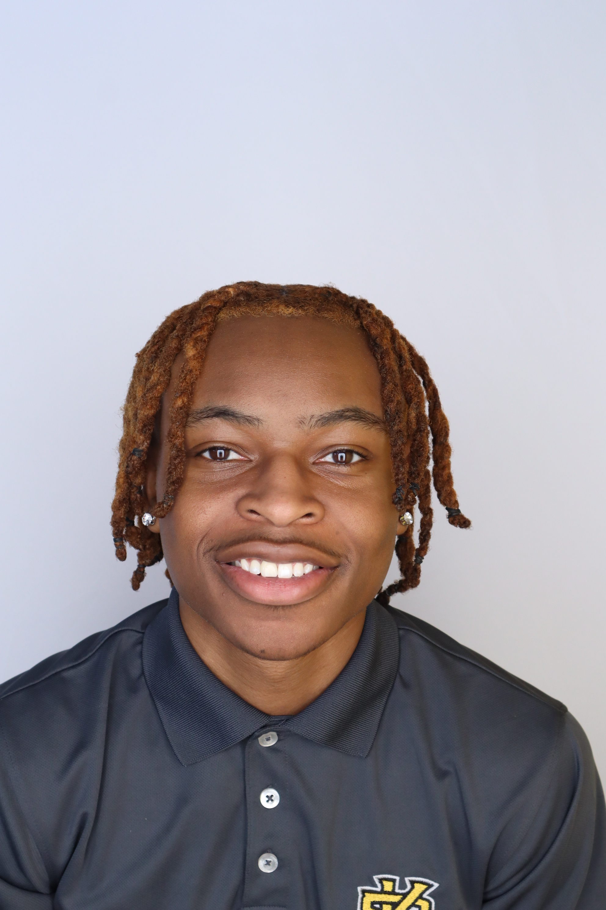

About Me
I am a Junior at Kennesaw State University studying Information Technology, passionate about technology and learning. I have a 3.5 GPA and was recognized for making the Fall 2024 Presidents list.
As a Junior, I've gained great work experience in the field of IT through internships and a co-op. In the summer of 2023, I worked as a PC Network Technician for the Bibb County Board of Education. Along with this internship, I also worked as a Support Technician for Bunch Consulting from Summer 2023 until Summer of 2024. Currently, I am gaining valuable experience as a Technical Support Analyst at the Institute of Nuclear Power Operations.
My goal is to build my experience while in college to be prepared for a career in technology while continuously learning, growing and adapting.